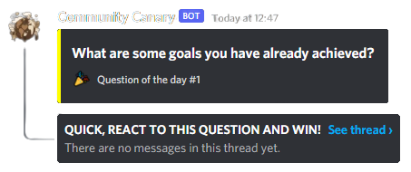
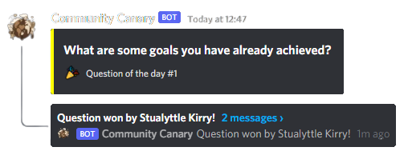
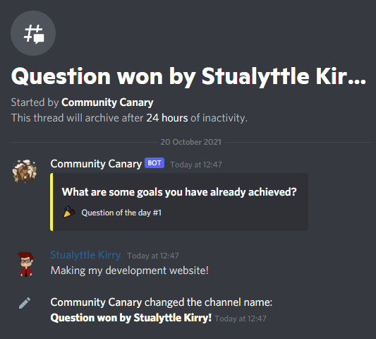

The community bot!
It all started with the "Questions Of The Days"!
The idea is to react as fast as possible to a question.
The first who reacts gets a special role or function!
When someone reacts to the message it will change the topic and that person is announced!
The people can react to the question in threads, a new feature from discord.
We streve to keep our bot updated and new, folowing all new features and reworking old ideas.
